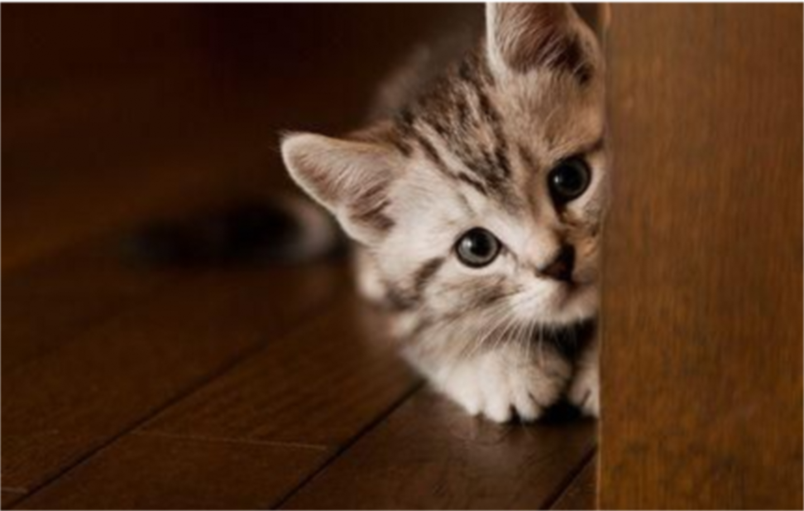

Paizkopling.id
Kami adalah kelompok pecinta kucing yang berkomitmen untuk
berbagi informasi tentang jenis kucing. Kami memiliki beragam
pengalaman dan pengetahuan tentang kucing, dan kami berbagi
tips, panduan, serta cerita tentang kucing. Misi kami adalah
meningkatkan pemahaman tentang jenis kucing dan mendukung
kesejahteraan mereka. Jika Anda memiliki pertanyaan atau ingin
berbagi cerita kucing, jangan ragu untuk menghubungi kami.
Terima
kasih telah bergabung dengan komunitas kami.